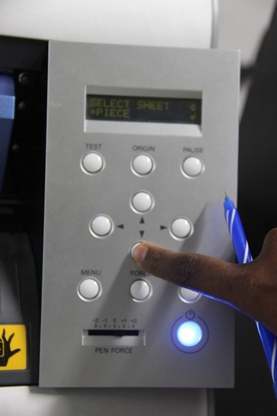

EXTREME MACHINES WEEK!!!!!!!!!
This week was all about digital fabrication equipments we are using in fablab to build, code, solder, design pretty much anything they can think of(Vinyl cutter,PCB Milling Modella,Electronics workbench,Laser cutter,3D printer,shopbot,Molding and casting)
Luciano gave an introduction about Roland CAMM-1 Servo vinyl cutter,Usage of Vinyl cutter,steps to make a sign,how to set up the mechine
The vinyl cutter uses a small knife to precisely cut the outline of a picture into a sheet or piece of vinyl. The knife moves side to side and turns, while the vinyl is moved beneath the knife. What results from the cut process is an image cut into the material. The material is then 'weeded' where the excess parts of the picture are removed. It is possible to remove the positive parts, which would give a negative sticker, or you could weed the negative parts, giving a positive sticker. Removing the letters would be like removing the positive, giving a negative image of the word, etc.
First of all i made a sticker of a basic design. The size was small, no larger than 3 inches on a side.i thnink Keeping our first images small will help us master the process quickly with a minimum of materials.
Found out an image that i want to make into a sticker and made it black and white with no gray for best results.
Saved the image as a .png file.The software running the cutter likes to have a jpeg, Scaleable Vector Graphic (.SVG) can work fine as well.

Load the sample piece of vinyl into the machine. On the left side in the front and back are two LED 'eyes'. These are infared emitters and receivers which sense the presence of the vinyl. You have to position the vinyl so that it will cover these sensors. You also have to position the pressure rollers over the vinyl to make sure it will be able to handle the material. On the panel above the rollers, there are several white lines. The rollers must be positioned on these white lines or the machine wont run. Make sure the vinyl is running straight, or it may slip out from under the rollers. Flip the pressure lever to make the rollers press down, holding the vinyl between the rollers and the pressure bar.
Open Cut Studio, the software bundled with the cutter.
Import your image. It should show up as a grayed out picture.
Right click on the image, then choose Trace Image Outline
A dialog box will come up, you can adjust the accuracy of the cuts by adjusting the values.
You will see an outline of your image laid on top of the picture.
Click the Move button on the upper right to put the outline in the bottom right of the design area.
Next, delete the picture.
Right click on the picture and choose 'Properties'
There are three tabs. For size, choose the size that will fit your sample piece of vinyl. The cutter measures in millimeters.
If you need to rotate the image to fit the sticker size, you can do that in the 'Rotation' field.
If you haven't already, to put a box, oval or circle around your image to make it easier to separate later.

Check the display. It shoulde say Sheer unloaded intil you engage the pressure roller. Then you will need to use the down arrow to tell the machine you have loaded a piece or a roll. If you choose piece, the cutter head will move sideways, measure the space between the rollers, then it will move the piece out, the back in, then to its original position. This process used the 'eyes' to measure the height of the piece. you then should be able to see the readout on the display of the pieces measurements.
 Press the Cut button on the icon bar.
The cutter head should then move side to side and the vinyl should move back and forth.
When the design is cut, you can use the arrow keys to move the vinyl out of the machine.
There is a groove on the front of the machine. Use a razor knife in this groove to cut the piece off. If there is enough material left, you can leave it in the machine for the next person.
This is my first soldering experiance, Soldering is the process of using a filler material (solder) to fix components in pcb sheet. Soldering occurs at relatively low temperatures (around 400 degrees Fahrenheit) as compared to brazing and welding, which actually melt and fuse the materials themselves at higher temperatures. In soldering the filler material becomes liquid, coats the pieces it is brought into contact with, and is then allowed to cool. As the solder cools it hardens, and the two materials are joined. Soldering is a quick way to join many types of materials, from copper pipe to stained glass. It creates an electrically conductive strong bond between components that can be re-heated (desoldered) if you should ever want to disconnect two items joined together. It's great for joining electrical components and wires and is used in just about everything electronic.